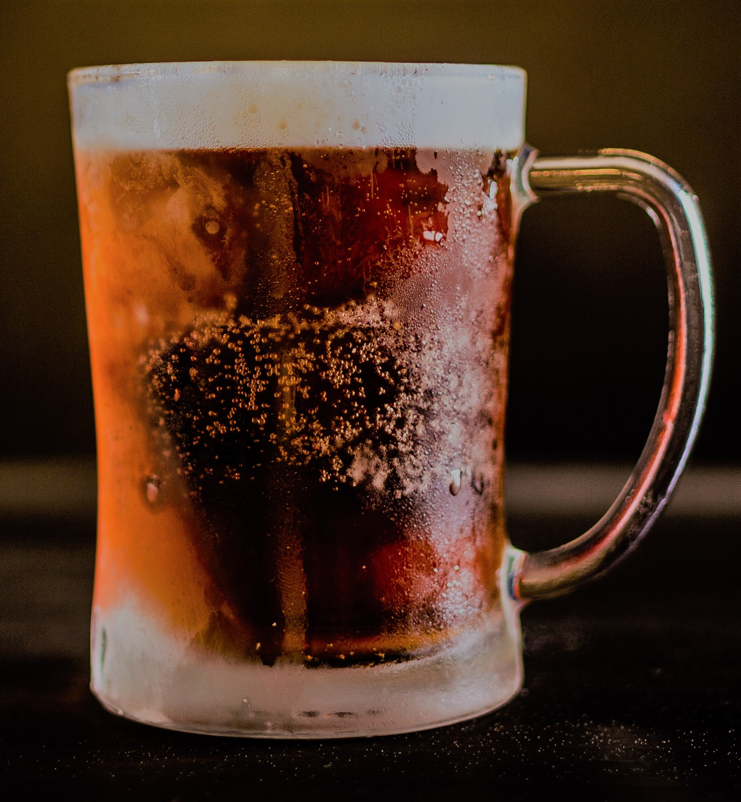

IIPA Zeke's IIPA 9% ABV This double IPA has an intense hoppy flavor with a deep, malty undertone for a balanced tasting beer.
Lager Zeke's lager style ale. 5% ABV Zeke's lager has a crisp, light, refreshing flavor that only comes from American Lagers.
Porter Zeke's porter. 6.5% ABV Our Porter has a dark color and subtle hints of molasses and a rich, roasty flavor.
Red Ale Zeke's Red ale. 6.2% ABV  Zeke's Red ale is a balanced beer with fuity highs and toasted malt characteristics.
Espresso Stout Zeke's espresso stout 8.7% ABV Zeke's espresso stout is made with locally roasted espresso beans and is dark, hoppy and aromatic.
Cider Zeke's dry cider 6.5% ABV Zeke's dry cider is pleasantly acidic with flavors of Granny Smith and Golden Delicious apples.